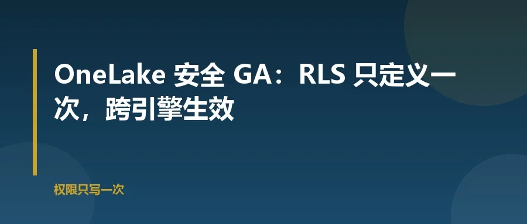

OneLake 安全 GA：RLS 只定义一次，跨引擎生效
OneLake 安全 GA：权限定义一次，引擎共用。但建外部表不等于授权，这条边界要先弄清。

安全规则每多维护一遍，就多一个漏的地方。
这是我接报表项目时最先问的一件事：这份数据的权限，有几套。一套在仓库，一套在语义模型，一套在查询平台。三套规则，三个地方改。改漏一个，就是事故。
本周，微软把 Eventhouse 对 OneLake 安全（OneLake security）的支持推到了正式可用（GA）。博客不长，但说清了一件事。
先把两个概念说清楚。OneLake 是 Fabric 的统一存储层，各个引擎读的是同一份数据。Eventhouse 是 Fabric 里的实时分析引擎，用 KQL（Kusto 查询语言）查数据。
权限定义一次，放在数据旁边，各个引擎共用。
听起来像口号。放到具体场景里，它是个不小的变化。
同一句规则，写三遍
先看问题在哪。
一份 Lakehouse（湖仓）里的销售数据，很少只有一个入口。Power BI 语义模型读它，KQL 查它，SQL 分析端点也查它。每个入口有自己的权限体系。
Power BI 这边是 RLS，行级安全性，靠 DAX 里的过滤表达式实现。KQL 那边是数据库层的访问控制。SQL 端点是另一套 GRANT。
同一句业务规则——「华东的经理只能看华东」——你要写三遍。
写三遍本身不致命。致命的是它们会漂移。
设想一个很常见的场景。年初新增一个业务单元，Power BI 的 RLS 改了，KQL 那边忘了。三个月后有人发现，某个区域经理在实时看板上看到了别的区域的数据。这种问题不报错，只在审计的时候被翻出来。
我之前做的 FinOps 看板，27 个业务单元、28 个 RLS 角色。角色表单独维护，改一次组织架构，就得对着映射表核一遍。那还只是一个语义模型、一个引擎。
如果同一个口径要在三个引擎里各维护一份 28 个角色，问题不是工作量翻三倍，是可维护性没了。
OneLake security 要解决的就是这个。
它的思路不是「给每个引擎做一套更好的权限工具」，而是把权限定义从引擎里拿出来，放到存储层。数据在 OneLake，权限就定义在 OneLake。引擎来查，按查询者在这份数据上的有效权限过滤。
引擎从权限的所有者，变成权限的消费者。
国内常见的一种分工是：数据平台的权限归 IT，报表的权限归业务或 BI。两边各有一套，谁也说不清哪套是准的。OneLake 这套做法逼你先回答一个问题：这份数据的权限，到底谁说了算。
这次 GA 具体接上了什么
落地的是 Eventhouse 的外部表（external table）。
外部表查的是受 OneLake security 保护的数据时，三层控制自动生效：
| 控制层级 | 管什么 | 最容易被误解的地方 |
|---|---|---|
| 对象级（object-level） | 用户能访问哪些 OneLake 表 | 在 Eventhouse 建外部表，不等于拿到它引用的数据权限 |
| 列级（column-level） | 敏感列是否可见 | 能分析被允许的数据，但看不到受保护字段 |
| 行级（row-level） | 按 OneLake 安全角色里的规则过滤行 | 查外部表的人，只拿到他被授权读的行 |
三层里，第一层的括号最值得停一下。
建表不等于授权。
原文写得很直接：在 Eventhouse 里创建一个外部表，不会因此授予对它所引用的受保护数据的访问权。
反过来讲更有用：外部表是一个查询入口，不是绕开安全的旁路。
很多人有肌肉记忆——我建了个表，就能查。在传统数据库里，建视图、建外部表，往往等于用一个更高权限的身份做代理。这里不是。控制按查询者的有效 OneLake 权限套，不按建表人的。
这个区别决定了上线前必做一件事：拿一个真实的数据使用者去试。别拿管理员账号试。管理员看什么都是全的，试不出行级过滤到底有没有生效。
原文给的路径是三句话：
第一，用 OneLake security roles 定义对 OneLake 表的访问。第二，通过 Eventhouse 端点查询受保护的数据。第三，用一个有代表性的数据消费者验证：表访问、列限制、行过滤，是否符合策略。
第三步不要省。前两步是配置，第三步才是验证。配对了，不等于策略对了。
还有一个背景要说清楚，不然容易以为这是两件事。
Eventhouse 端点（Eventhouse endpoint for Lakehouses）是一层高性能查询：直接查 Lakehouse 里的数据，不复制一份。同一份数据，你可以用 Eventhouse 引擎的速度去查，而不用先搬过去。
以前这里有个隐含取舍：要性能就复制数据，复制了数据就要再维护一套权限。现在这个取舍被拆开了——性能走端点，权限留在 OneLake。
适用与不适用
适用：Lakehouse 数据同时被 KQL 和 Power BI 查，而且你已经在用、或者打算用 OneLake security roles。这种情况接上，等于少维护一套规则。
不适用：只用 Power BI Desktop、权限靠语义模型 RLS 的。OneLake security 不在你的链路里，这次更新对你没有直接影响。
要观望：权限现在靠 SQL 端点或 Warehouse 的 GRANT 在管的团队。从 GRANT 迁到 OneLake roles 是个治理动作，不是配置动作。别为一个 GA 公告去动生产权限。
我的判断
必学，但今天不用动手。
拆开说。
概念上必学。把安全定义在数据旁边、让引擎来消费，这个方向不止影响 Eventhouse。它决定了以后你在 Fabric 里做权限，是「一个地方定义」，还是「每个消费端各写一遍」。这个判断早晚要做，越早建立越省事。
行动上不用急，三个原因。
一，这是 GA 公告，不是操作手册。原文没给角色数量上限，没给大规模行级过滤的性能数据，也没说对 Direct Lake 这类消费方式的具体影响。这些要等实测。原文没写的，不要当成结论往外讲。
二，它解决的是「多引擎」的问题。只有一个引擎在查这份数据，收益接近零。等你真有第二个入口，再动手。
三，权限迁移的风险高于收益。把现有 GRANT 或模型内 RLS 收敛到 OneLake roles，中间会有一段两套并存的时期。这段时期的错配最难查。
所以按人来分：
- 已经在 Fabric 里用 Lakehouse + Eventhouse，有多个查询入口 → 现在评估。先挑一个非核心数据集，把三层控制各验一遍，特别是行级。
- 只在 Power BI 里做模型，权限靠语义模型 RLS → 观望。知道有这个东西就行。
- 权限还散在 SQL GRANT 里，没有治理计划 → 先别碰。先把「权限定义在哪」定下来。
还有一句要说给做交付的人。
这个功能最容易出错的地方不是配置，是假设。假设「我建了外部表，团队就能查」，结果行级过滤把人挡在外面；或者反过来，假设「OneLake 里限了，KQL 那边一定也限了」，结果还有一张旧的外部表连着旧路径。
原文那句「外部表提供的是查询数据的方式，不是绕开安全的另一条路」，应该贴在每个团队的检查清单上。
最后
安全这件事，写一遍是设计，写四遍是负债。
你们现在维护同一份数据的权限，是几套？
原文：Eventhouse support for OneLake security (Generally Available) — Microsoft Fabric Blog（https://community.fabric.microsoft.com/t5/Fabric-Updates-Blog/Eventhouse-support-for-OneLake-security-Generally-Available/ba-p/5377875）
如果你们团队也在犹豫要不要切这个预览，评论区聊聊具体情况，我按项目类型给建议。
原文：Eventhouse support for OneLake security (Generally Available) — Microsoft Fabric Blog
关于作者
Jevon Zhu，成都 Power BI 顾问。 从业 10 年，世界 500 强公司 BI 开发者。 报表开发 · 语义模型与 DAX · 企业培训。 B 站「人人都爱PowerBI」。
个人站点：ipowerbi.icu